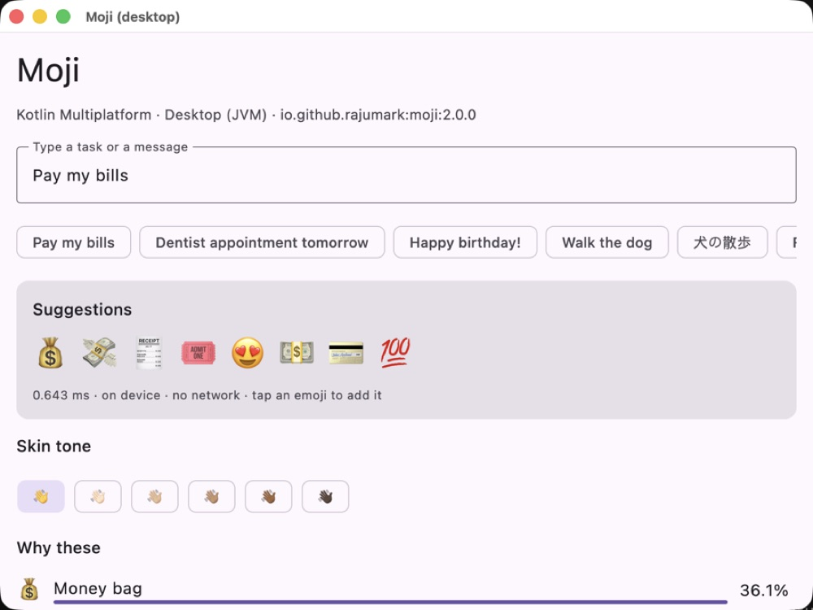
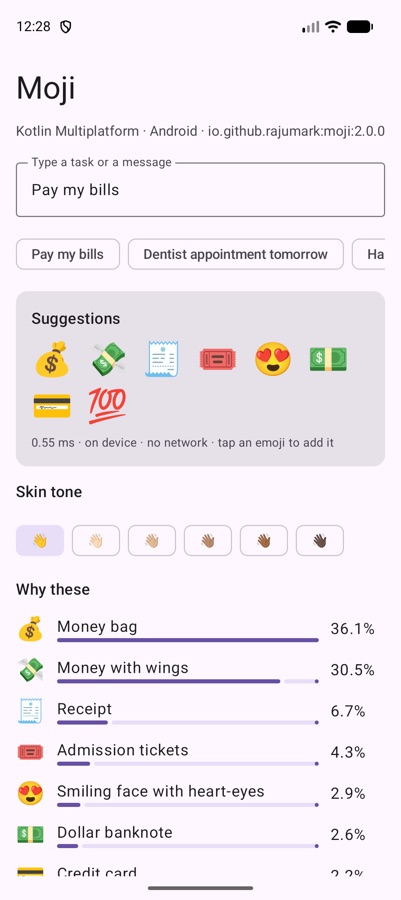
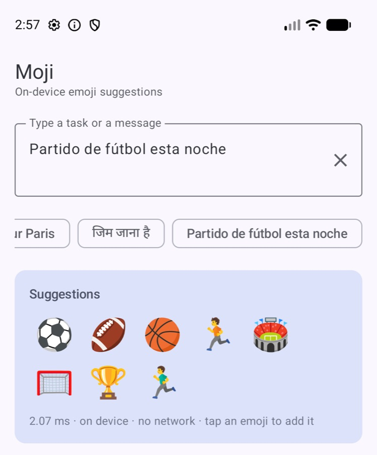

Moji: a 5 MB model that knows 💰 goes with “pay my bills”
Every keyboard has an emoji bar. Almost none of them read what you typed. This is how I built one that does, in 22 languages, without asking a server.

It started with a thumbs up
Look at the last ten messages you sent. Count the emoji. For most people it's somewhere between “a few” and “every single one”. Emoji aren't decoration any more — they carry tone. “OK” and “OK 🙂” are different messages. “OK 👍” is a third one.
And yet the emoji bar on most keyboards is a history list. It shows you what you used yesterday, not what fits today. Type “Exam tomorrow” and it offers 😂 because you laughed at something last night.
The obvious fix is a lookup table: “pizza” → 🍕. That works for about a week. Then someone types “Pay my bills”, where no word is an emoji name, or “जिम जाना है”, where the words aren't even in English. The table has nothing.
What I wanted instead
I wanted something that reads the whole message and understands the situation. Paying bills is about money. Going to the gym is about effort. A football match tonight is about football, excitement and probably a late night.
And it had to live on the phone. An emoji bar updates on every keystroke. Sending every keystroke to a server is slow, it's expensive, and it's a strange thing to do with someone's private messages.
Here is what Moji does with a few real inputs:
“Pay my bills” doesn't name an emoji, and the Spanish one isn't in English. The model still gets there, because it learned what messages mean, not what words look like.
It isn't perfect, and I'd rather show you than pretend. On “Pay my bills” the top two picks (money bag and money with wings) carry about two thirds of the confidence, and then it drifts: 🎟️ and 😍 sneak into places four and five. Short tasks in some languages drift more than that. That's why every suggestion comes with a score — so the app can show three strong picks instead of eight weak ones.


The part nobody sees: fitting it in 5 MB
Big language models could do this easily. They're also hundreds of megabytes and take hundreds of milliseconds. An emoji bar needs an answer before the next key lands.
So Moji is small on purpose. It reads the text in two ways at once: short pieces of characters (so typos and slang still land somewhere familiar) and SentencePiece tokens (so it understands words in 22+ languages). A small network scores all 1,000 emoji in its vocabulary and returns the best ones. The weights are stored as 8-bit integers, which is why the whole thing adds about 5 MB to an app.
The number that matters: about 0.3–0.6 ms per suggestion once warm on JVM, Android, JS and Wasm, and about 2 ms on a mid-range phone (a Moto G57 Power). That's fast enough to run on every keystroke without the user ever feeling it.
Why plain Kotlin, and no native code
Most on-device ML libraries bring a runtime with them: TensorFlow Lite, ONNX Runtime, a native .so per CPU architecture. That's fine until you want the same thing on iOS, on a desktop app and in a browser.
Moji's inference is written in plain Kotlin in common code. The only platform-specific parts are Unicode normalization and loading the model file. That's the reason it runs on Android, iOS, macOS, JVM desktop, JavaScript and WebAssembly from one dependency — and the reason every platform gives the same answer. Each one is tested against the Python reference on 443 vectors and must return the same top 5 emoji.
// build.gradle.kts
implementation("io.github.rajumark:moji:2.0.0")
// anywhere in common code
val moji = Moji() // load once, off the main thread
moji.suggestions("Pay my bills") // 💰 💸 🧾 💵 💳
moji.suggestions("Great job thumbs up", skinTone = SkinTone.MEDIUM) // 👍🏽 👏🏽 …That skin tone parameter was a small thing that took an afternoon, and it's the kind of detail I care about. If a user has chosen a tone, every hand and person emoji the library suggests should respect it.
Where it belongs
The keyboard is the obvious home, but the ideas I like most are quieter ones: to-do apps that auto-icon a task (“buy milk” → 🥛), expense trackers that tag “Uber” with 🚕, calendar apps that put ✈️ next to “flight to Goa”. None of that needs a server. It needs a model small enough to forget it's there.
It's accurate enough to be useful — the right emoji is in the top 5 for 88% of a set of 111 everyday messages across 22 languages, measured on a phone — and honest enough to say when it's guessing: every suggestion comes with a confidence you can use to hide the bar.
A good emoji suggestion is invisible. You just tap it and move on. That's the whole goal.
Moji is free for products with up to 10,000 monthly active devices, commercial apps included, with no API key and no sign-up. If you're building a keyboard, a chat app or anything with a text box, give it five minutes.
The Hoverfly series. Eight small on-device models, one job each, all plain Kotlin Multiplatform with no native code. Each post is written differently, because each model taught me something different.
- Moji — emoji suggestions, told as a story (you are here)
- Beacon — language detection, as a benchmark report
- Comma — punctuation restoration, as a step-by-step tutorial
- Comeback — smart replies, as an honest opinion piece
- Emotion — emotion detection, as questions and answers
- Gatekeeper — toxicity detection, as a practical playbook
- Hideout — personal info hiding, as an audit checklist
- Chalk — doodle recognition, as an engineering deep dive